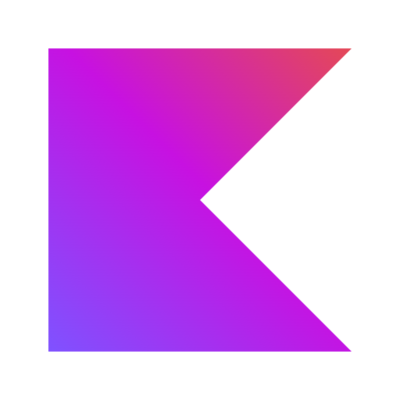
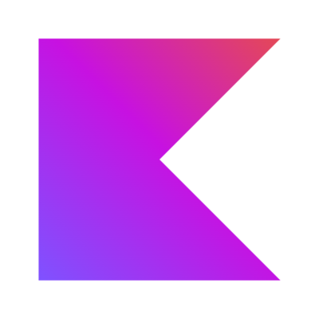
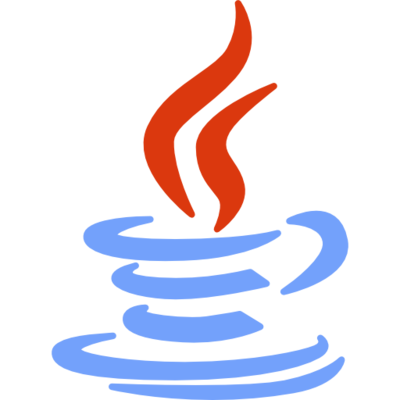
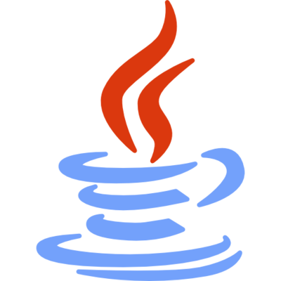
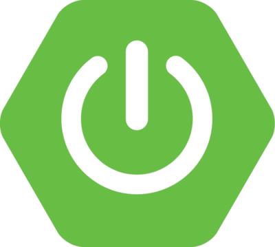
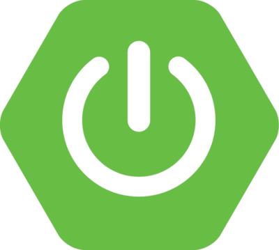
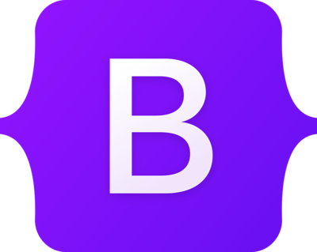
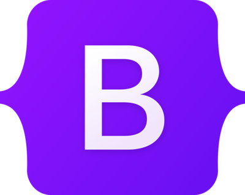

Mario de Domingo
Alvarez
web application development student

¬°¬°¬°Saludos‚úå!!! Soy Mario de Domingo √Ålvarez üí•

¬°Hola! Soy Mario, estudiante de Desarrollo de Aplicaciones, apasionado de la M√∫sica üéµ y un fan√°tico del cineüé¨, especialmente de Marvel . Me encanta la magia del cine y c√≥mo las pel√≠culas pueden transportarnos a mundos imaginarios y emocionantes, y tambi√©n, me fascina como la m√∫sica es capaz de lograr que sintamos cosas indescriptibles.

Mi inter√©s por el desarrollo de aplicaciones web surgi√≥ cuando descubr√≠ la capacidad de utilizar la tecnolog√≠a para crear experiencias interactivas y funcionales en l√≠neaüåê. Como estudiante de desarrollo de aplicaciones webüíª, me emociona la idea de combinar mi amor por el cine y Marvel con mis habilidades t√©cnicas.


Como un verdadero friki de Marvel me fascina el UCMüï∏Ô∏è y c√≥mo las diferentes pel√≠culas se conectanüì° entre s√≠ para crear una narrativa √©pica. Me encanta sumergirme en las historias de los superh√©roes, sus poderes y los desaf√≠os a los que se enfrentanüöÄ.
En resumen, soy Mario, un estudiante de Primero de D.A.W. entusiasta en el centro de educaci√≥n superior IES Luis Vives en Legan√©s. Estoy emocionado por las oportunidades que el campo de la tecnolog√≠aüõ∞Ô∏è me ofrece, y espero poder combinar mis dos pasiones para crear proyectos web innovadores.
üíª Tecnolog√≠as que uso

 



 


 


 
